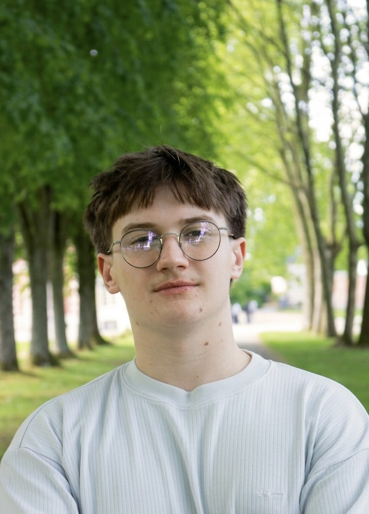
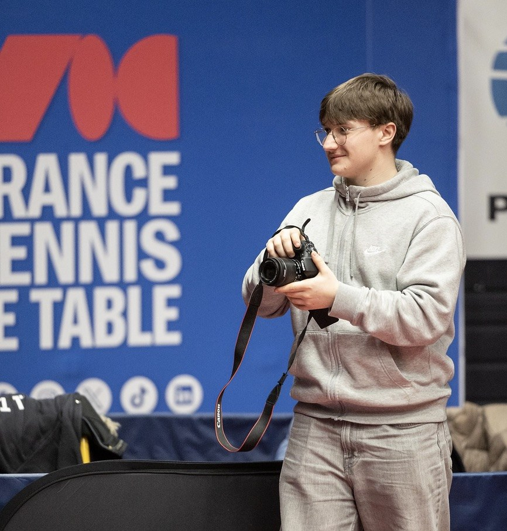
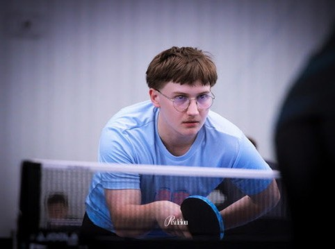

Qui je suis
Léonard, 20 ans. Le sport, je le vis de l'intérieur
Passionné de sport depuis toujours, je joue au tennis de table depuis 14 ans. Joueur, entraîneur, bénévole sur de grands événements : je connais le terrain, ses moments forts et ses codes. Étudiant à l'IAE de Lille, j'ai créé CHATAX, mon entreprise enregistrée à l'INPI, que je développe à côté de mes études. C'est ce regard que je mets au service de votre communication.
Du terrain
En compétition chaque week-end, je sais où me placer et quel moment capter.
Les codes de la com' sport
Résultats, affiches de match, lives, Reels : je sais ce qui marche auprès des licenciés et des partenaires.
Réactif
Une sélection publiable le jour même pour les résultats, le reste dans la foulée.
Basé à Lille
Étudiant en marketing, communication & digital, je me déplace partout en France et en Belgique.

Mon parcours
Le tennis de table, depuis 2013
Licencié depuis 2013, je pratique le tennis de table en compétition depuis quatorze saisons.
Aujourd'hui, je joue en National 2 en individuel et en Pré-national par équipes. En 2026, je suis devenu vice-champion de France universitaire en double mixte.
Ce niveau d'exigence m'a appris la rigueur, le sens du détail et la capacité à rebondir après une défaite. C'est exactement ce qu'il faut derrière un appareil photo, pendant tout un match.

Derrière l'objectif
Un regard de joueur
Je photographie le sport depuis l'intérieur : je sais où se jouent les temps forts d'un match et comment me placer pour les capter.
Je travaille avec un boîtier Canon et un 70-200 mm f/2.8, pour saisir le jeu au plus près sans jamais gêner les joueurs ni l'arbitrage.
Depuis, je couvre des matchs de Pro A et de Ligue des champions, des championnats de France et des tournois dans tout le Nord et en Belgique.

Joueur avant tout
Ce que ça change pour vos images
- Je sais anticiper : un service, une remise, le point qui va faire basculer le set.
- Je connais les règles d'une salle : où me placer sans gêner l'arbitre ni les joueurs.
- Je parle le même langage que les clubs, les coachs et les bénévoles.
- Je sais ce qui compte pour un club : les résultats, les partenaires, les licenciés.
Mon entreprise
CHATAX, un vrai cadre pro
CHATAX est une entreprise enregistrée à l'INPI. Je l'ai créée et je la développe en parallèle de ma Licence 3 Marketing, Communication & Digital à l'IAE de Lille.
Mes études nourrissent directement mon travail : ce que j'apprends en stratégie et en communication digitale, je l'applique sur le terrain, pour les clubs et les événements que j'accompagne.
Entreprise enregistrée
Une structure déclarée, pour travailler avec les clubs, les comités et les organisateurs dans un cadre clair.
Devis & facture
Un devis détaillé avant chaque prestation, une facture à la fin. Rien d'improvisé.
Un seul interlocuteur
Je m'occupe de tout, du premier échange jusqu'à la livraison des images.
Un projet qui grandit
Chaque saison, de nouveaux clubs et de nouveaux événements rejoignent l'aventure.
Au-delà de la photo
Sur le terrain, sous toutes ses formes
Entraîneur
Diplômé initiateur de club et animateur fédéral, j'encadre des jeunes et des adultes depuis plusieurs saisons, à Lisieux puis à Grand-Quevilly.
Bénévole
Finale de Pro A à la Kindarena, Open WTA 250 de Rouen, championnats de France à Montpellier, circuit WTT : je connais l'envers des grands événements.
Étudiant-entrepreneur
En Licence 3 Marketing, Communication & Digital à l'IAE de Lille, je mène mes études et CHATAX de front.
Mobile
Basé à Lille, je me déplace partout en France et en Belgique avec mon matériel.
Mon matériel & mes outils
- Canon 750D
- 70-200 mm f/2.8
- 18-55 mm
- Photoshop
- Canva
- CapCut
- OBS Studio (lives)
Contact
Écrivez-moi.
Un match à couvrir, un tournoi à raconter, des réseaux à relancer ? Dites-moi tout, je vous réponds vite.